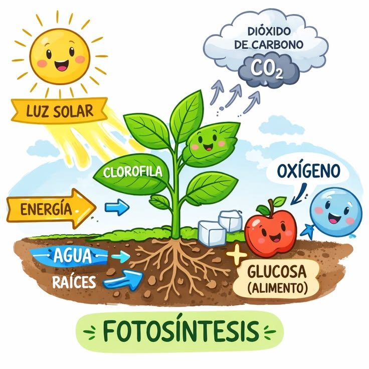
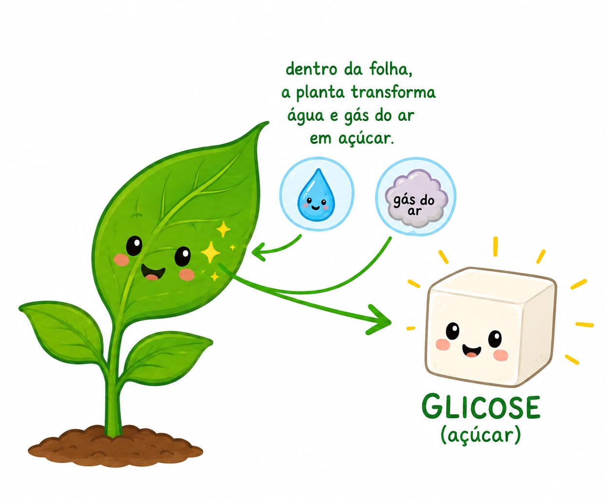
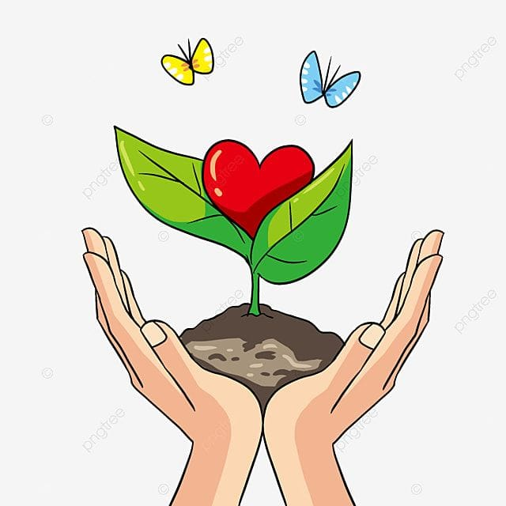

🌱 Fotossíntese
O que é a Fotossíntese?
A fotossíntese é o processo que as plantas usam para fabricar o seu próprio alimento e produzir energia para crescer.
Recursos básicos do ambiente:
- H₂O (Água): Absorvida pelas raízes, serve como fonte de elétrons e hidrogênio.
- CO₂ (Dióxido de Carbono): Absorvido pelos estômatos das folhas, serve como base de carbono para construir o açúcar.
- Fótons (Luz Solar): A energia que vai quebrar e colar as moléculas.
Dentro das células das folhas, existem organelas chamadas cloroplastos. Eles funcionam como usinas de energia. Ali dentro está a clorofila, um pigmento capaz de absorver os fótons da luz.
O que acontece com essa transformação:
- O Oxigênio: É a sobra da água. A planta não usa, então ela joga para o ar (que é o gás que nós respiramos).
- A Glicose (Açúcar): A planta junta o resto da água com o gás do ar e fabrica açúcar. Esse açúcar é o combustível que ela queima para ter energia, crescer e sobreviver.

Questão 1 – Complete as Lacunas
Use as palavras do quadro abaixo para completar as frases:
a) Para ligar a sua "fábrica" de energia, a planta captura a luz do .
b) A planta quebra a que vem da raiz para começar o processo.
c) O é a sobra desse processo e vai para o ar que nós respiramos.
d) O açúcar que a planta fabrica para comer e crescer se chama .
Questão 2 – Descubra o Personagem
Pista 1: Venho lá do céu. Sem mim, a fábrica da folha fica totalmente sem energia e não consegue quebrar a água. Quem sou eu? ☀️ (Dica: Começa com L)
Pista 2: Sou um açúcar feito com a força do Sol e o gás do ar. A planta me usa para ganhar energia, ficar forte e crescer. Quem sou eu? 🔋 (Dica: Começa com G)

Questão 3 – Enigma dos Emojis
Escreva a inicial do nome de cada imagem para descobrir a mensagem secreta sobre as plantas:
🐄 🏝️ 🐄 🍍 🍍 🔔
🦆 🦁 🍍 🚢 🐢 🍍 🔔

🐾 Animais Vertebrados e Invertebrados

Animais Vertebrados
Vetebrados Os animais vertebrados são todas as criaturas que têm ossos por dentro, ou seja, eles possuem uma coluna vertebral e um crânio que protegem o seu corpo e o cérebro. Ao contrário dos invertebrados, eles formam um grupo menor no planeta, representando cerca de 5% de todas as espécies de animais do mundo. Esse esqueleto interno funciona como uma estrutura forte que permite que eles cresçam bastante, corram rápido e façam movimentos complexos. Eles são divididos em cinco grupos muito conhecidos por nós: os peixes que nadam na água, os anfíbios como os sapos, os répteis como os jacarés e cobras, as aves que possuem penas e voam, e os mamíferos, que são os animais que mamam quando filhotes — grupo do qual nós, os seres humanos, também fazemos parte.
Aprenda Mais Sobre os Animais Vertebrados

Animais Invertebrados
Invertebrados Os animais invertebrados são todos aqueles que não têm ossos por dentro, ou seja, eles não possuem coluna vertebral e nem crânio. Eles estão por toda parte e representam a grande maioria do nosso planeta, sendo 95% de todas as espécies de animais que existem. Como eles não têm um esqueleto interno para ficar de pé, a natureza deu soluções incríveis para eles se protegerem: alguns usam uma armadura dura por fora do corpo, como as formigas, os besouros e os caranguejos; outros moram dentro de uma concha protetora, como os caracóis; e existem também aqueles que têm o corpo totalmente mole e livre, como as minhocas e os polvos.